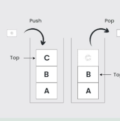

<a href="#" class="text-decoration-none items">
    <div class="bg-card_1 p-3 card inline d-flex flex-row mt-4">
        
        <div class="ps-3">
            <h4>บทเรียนที่ 2</h4>
            <h5>Stack</h5>
            <p>เป็นชนิดข้อมูลที่มีลักษณะเป็น Last In First Out (LIFO) ​
                หมายถึงข้อมูลที่เข้ามาก่อน จะถูกดึงออกสุดท้าย​
            </p>
        </div>
    </div>
</a>